イベント情報
（終了しました）地震に強い平屋で、安心の暮らしを始めよう！相談会
詳しいご案内
日程・価格・募集内容などは、掲載当時の情報です。

平屋への関心の高まり
能登半島地震
2024年の能登半島地震は、多くの人々に地震に対する意識を改めて考えさせました。特に、住宅の安全性に対する関心が高まり、その結果、平屋への注目が集まることになりました。平屋は、2階建てに比べて重心が低く、地震時の横揺れに対する抵抗性が比較的高いとされています。
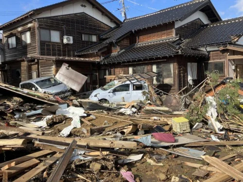
子供が成長した後も快適な平屋暮らし
働き方や価値観が多様化する中で、住まいに対するニーズも大きく変化しています。平屋の家は、子供が巣立った後の老後の生活はもちろん、子育て世代のニーズにも万能に対応できます。
子育て世代には、子供の安全を確保しやすく、目が届きやすいという点で人気です。
高齢のご夫婦には、家のメンテナンスがしやすく、また階段の上り下りが困難になる高齢者にとって、バリアフリーで過ごしやすい住まいです。
ただ考慮する点としては、子供部屋をどのようにするかですが、例として書斎や趣味の部屋に改装するなど将来の間取りも一緒に考えると良いでしょう。
フジの平屋10パターン公開
フジ創では、お客様一人ひとりの暮らしに寄り添い、理想の平屋を実現するための豊富なプラン10パターンと平屋の注文住宅をご用意しています。
コンパクトな平屋5パターン
15坪以下の平屋は他ではほとんど見られないので、特徴的です。特に８坪の平屋はなかなかお目にかからないことでしょう。ただ実際に見学に来た人は、意外に広いねとよく言われます。その要因としては、無駄な空間を省き、間取りを工夫しているためです。
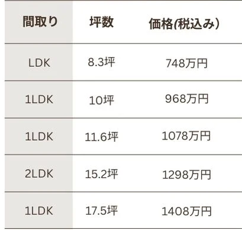
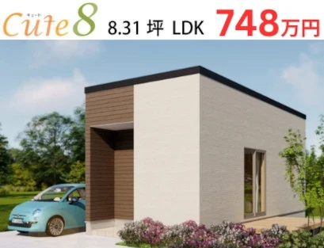
機能的なアイデアを詰め込んだコンパクト設計。平屋ならではの使い易さと基本性能を搭載したかわいい平屋の誕生です。 ▶詳細はコチラ
表示価格は本体価格です。本体価格以外に、仮設、付帯工事費や諸経費がかかります。
1ランク上の平屋5パターン
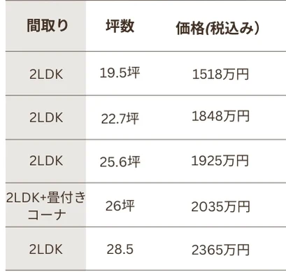
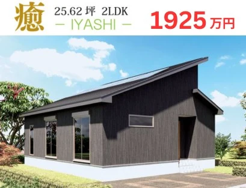
それぞれの思いを形に。ワンランクアップの贅沢仕様。 ▶詳細はコチラ
表示価格は本体価格です。本体価格以外に、仮設、付帯工事費や諸経費がかかります。
平屋の注文住宅
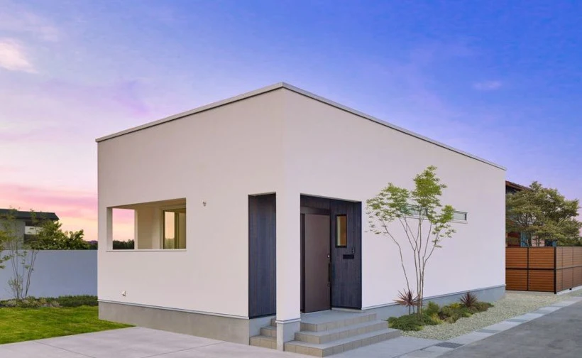
地震に強い家の構造
壁を強くすれば、家は地震に強くなる
・柱の太さではなく、壁の強さが大事
大黒柱よりも、壁の強さと量で耐震性は決まります。地震で倒壊した家は、柱が折れているのではなく、柱が倒れて壊れています。倒壊しないためには、強い壁があることが大事です。
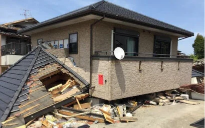
壁の種類
壁の作り方によって、強さが違います。木ずり板や筋交いに比べて、構造用合板を張ることで同じ壁でも、高い強度を獲得することができます。
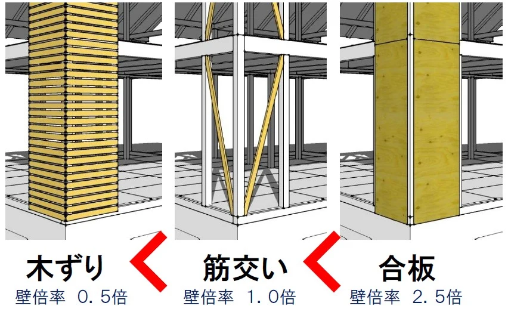
すべてで耐震等級最高3相当を実現！
フジ創では、24mmの構造用合板を柱の間にはめ込むことで強度を発揮しています。柱の上からではなく、間にはめ込むことでより粘り強い建物なります。
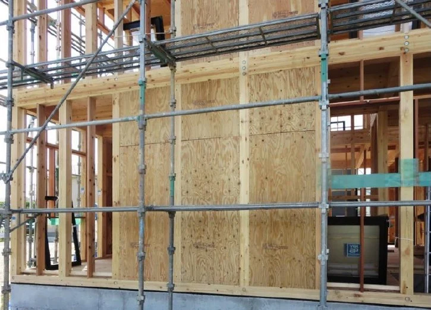
制震装置を採用し、衝撃力を30%～50%低減し、耐震等級最高3相当を実現しています。
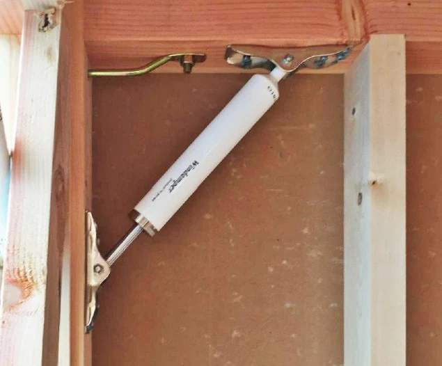
LINE無料相談
開催概要
- 開催日時
- 2025年2月22日（土）, 23日（日）, 24日（月・祝）
- 住所
- 富山県高岡市三女子139番地18(モデルハウスにて、相談会行います）
- 電話
- 0800-200-2661(フリーダイヤル)
〇ご相談会随時受付中
ご予約フォームから「お問合せ内容」欄にご希望の日時をご入力ください。
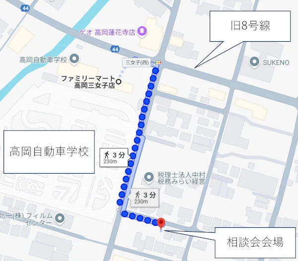
イベント（内覧・ご相談）ご予約フォーム
内覧・ご相談の場合は、ご希望日時を「お問い合わせ内容」欄にご記入ください